图的基本术语
边点相关
顶点 ：也称为节点/结点(node)。
边 ： 也称为弧(arc)，链路(link)。 边与两个顶点有关(head和tail)。
度 ： 与顶点相连的边的数目(或与之邻接的顶点数目)。也称价。
自环 ： 如果一条边的头和尾都是同一个顶点，则称为自环。
邻接 ：顶点u和v之间有边相连，则称u和v邻接（adjacent）。
可达 ： 两个顶点之间如果存在路径，则称这两个顶点可达(reachable)。
关联 ：与顶点u直接相连的边与u关联；反之，u也与这些边关联。
图相关
全连通图 ：如果图中任意两个顶点之间都邻接，则称该图为全连通图。
连通图 : 如果图中任意两个顶点之间都可达，则称该图为连通。
路径相关
路径 : 路径由首尾相连的一系列边构成。起点和终点。
圈 : 如果路径的起点和终点是同一个顶点，称为圈，或回路，环路。
简单路径 ： 不含圈的路径。
有向图相关
有向边 ： 可用有序顶点对表示，前者表示边的尾/起始，后者表示边的头/终止。作图时，用箭头表示有向边的头/终止。
出度 ： 以顶点v为起始的有向边数目。称为v的出度。
入度 ： 以顶点v为终止的有向边数目。称为v的入度。
加权图相关
加权图 ：加权图中，每条边都赋予了一个或多个权重。 权重可以代表各种物理意义。也称为网络。
路径权重 ： 加性权重：路径的权重等于路径所经过的所有边的权重之和。 也可能存在其它类型的权重，比如乘性权重，最大最小权重等。
树相关
树 ：不包含任何圈的连通图。
树的判决条件 ：
- 边的数目为顶点数目减1，且不含圈。
- 边的数目为顶点数目减1，且连通。
- 任意两顶点间存在唯一路径。
- 删除任意一条边，图就不连通了。
生成树 ：如果图G的一个子图包含了G的全部顶点，且为树，则称之为G的生成树(Spanning Tree)
图的表示方法
一般地，我们用n表示图中节点的数目，用m表示图中边的数目。
即给定图G(V, E)，n = | V |, m = | E |
对图的表示，我们一般有两种方法——邻接矩阵和邻接链表。
注：这里只对基本思想以及空间复杂度进行分析，不对方法的具体实现进行分析。
邻接矩阵
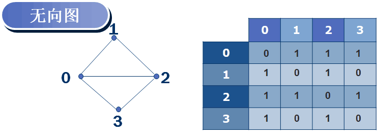无向图的邻接矩阵
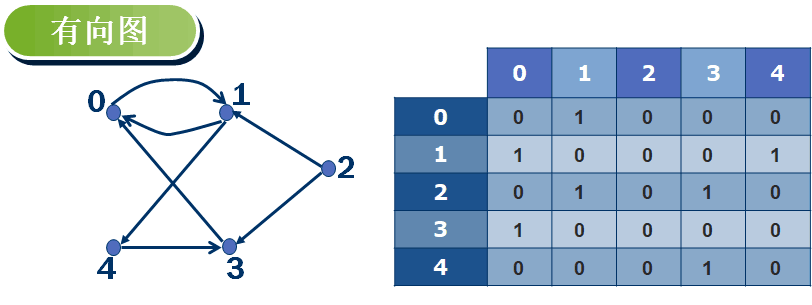有向图的邻接矩阵
**邻接矩阵的空间复杂度 **—— 𝚯(𝒏2)
邻接链表
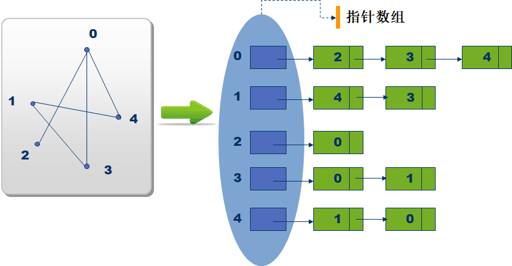邻接链表
**邻接链表的空间复杂度 **—— 𝚯(𝒏+𝒎)
方法选择
这门课程一般使用邻接链表，邻接矩阵适用于密集图，邻接链表适用于稀疏图。但是在通信网中，很多有价值的应用场景中，都是大规模稀疏图。
复杂度化简
而且如果G是连通的，𝒎≥𝒏−𝟏 ,𝒎=𝛀(𝒏)。因此假定图连通，则有𝑶(𝒎+𝒏)=𝑶(𝒎)。不做该假设，则𝑶(𝒎+𝒏)会更清晰些。
图的搜索算法
问题分析
目标：给定一个起点，标记完图中所有顶点或搜索出到某个结点的路径。
要求：每个点只标记一次。
基本模式：“访问扩展” —— 将顶点分为已标记、已访问、未访问三类，并不断从未访问中挑选一个点进行访问拓展直至全部标记。
概念定义
我们将已标记的点定义为黑色，已访问的点标记为灰色，未访问的点标记为白色。也就是说每次都从灰色中挑选一个点去扩展访问白色的邻接点，当灰色的点没有白色的邻接点时，则将该点变为已标记点（黑色）。
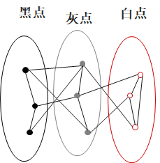三种结点集合
BFS 广度优先搜索
- 从灰色点中，优先选择对拓展广度有帮助的点。
- 先发现到s距离为k的所有节点，再发现到s距离为k+1的节点。
- “层”的概念。
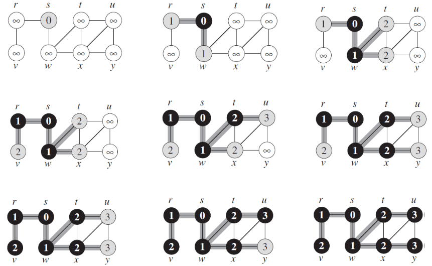BFS算法实例流程
// BFS伪码 使用了队列的数据结构
// BFS 树上的从源到每个节点的路径都是最短路径（包含边最少的路径）。
// B=所有灰色点构成的集合
将所有V中的点标记为白色
将s标记为灰色
B.EnQueue(s);
WHILE B非空
d=B.DeQueue();
FOR d的所有邻居t
IF t的标记为“白色”
B.EnQueue(t);
将t标记为灰色
ENDFOR
将d标记为“黑色”；
ENDWHILEDFS 深度优先搜索
- 从灰色点中，优先选择对拓展深度有帮助的点。
- 先一直拓展直到发现第一个没有白色邻接点的灰色结点，再回到上一个灰色结点，直至所有结点都被标记。
- “回溯”的概念：走不通了才会回退。
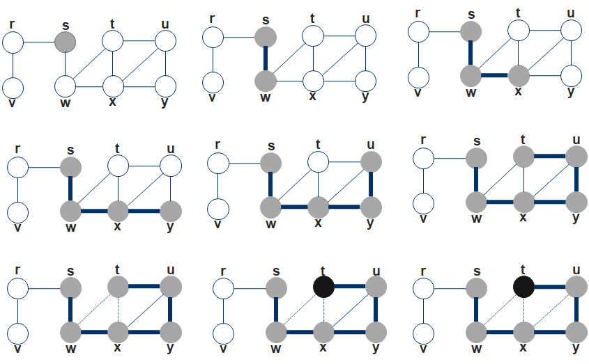BFS算法实例流程
// DFS伪码 使用了栈的数据结构
// B=所有灰色点构成的集合
将所有V中的点标记为白色
将s标记为灰色
B.Push(s);
WHILE B非空
d=B.Front();
Flag = 0；
FOR d的所有邻居t
IF t的标记为白色
B.Push(t);
将t标记为灰色
Flag=1;
break;
ENDFOR
IF Flag = 0
d=B.Pop()
将t标记为黑色
ENDWHILE区别
BFS和DFS的区别在于选择灰色点的策略不同。
对BFS 选择的灰色点是灰色点集合中最早成为灰色点的点
对DFS 选择的灰色点是灰色点集合中最晚成为灰色点的点
因此BFS用队列(FIFO)；DFS用堆栈(LIFO)。
复杂度分析
采用聚合分析，以BFS维护的队列为核心进行考察。
- 总的入队次数是n次 总的出队次数是n次
- 图中一共有m条边 无向图每条边检查2次 有向图每条边检查1次
- 最坏情况 O(n+m)
DFS的分析与BFS相同，时间复杂度都为O(n+m)。
图的连通性
无向图的连通分量
概念
在无向图中，下述等价关系的等价类：当且仅当图中具有u-v路径时，称𝒖~𝒗.
即无向图中，相互之间有路径的结点集合称为连通分量。
求解方法
# Loop-BFS(G)
# 选个未标记的结点调用BFS，直至图中所有结点被标记。
def Loop_BFS(G,i):
for i in range(n):
if i的标记为白色:
BFS(G,i);复杂度——O(n+m)
有向图的强连通分量
概念
在有向图中，下述等价关系的等价类：当且仅当有向图G中具有uv路径且具有vu路径时，称𝒖~𝒗.
即有向图中，相互之间有往返路径的结点集合称为强连通分量（Strongly Connected
Component, SCC）。当只有一个结点时，自己也可以是一个强连通分量。
下图为有4个强连通分量的有向图。
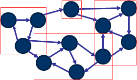4个强连通分量的有向图
化简方法
所有的SCC构成一个有向无环的“meta-graph”。其中每个SCC （记为𝑪𝟏,𝑪2,…,𝑪k）对应一个meta-node，如果原图中存在边(𝒖,𝒗), 𝒖∈𝟏,𝒗∈𝑪j,𝒊≠𝒋，则meta-graph中存在一条meta-edge(𝑪i,𝑪j)。
由此我们可以将所有图中SCC用𝑪𝟏、𝑪2…𝑪k表示，便可化简为一个新的有向无环图。
为啥无环？ => 多个成环的SCCs会坍缩成一个SCC。
下图为上图化简而来的有向无环图
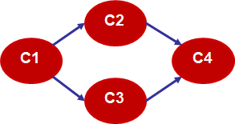化简后的有向无环图
求解方法——TWO-PASS算法
前言
由于该算法中调用的DFS算法有所改动，因此先给出改动后的代码。
# Loop-DFS(G)
# 选个未标记的结点调用DFS，直至图中所有结点被标记。
def Loop_DFS(G,i):
for i in range(n):
if i的标记为白色:
s = i; # s用于标记同一个强连通分量内的结点
DFS(G,i);
# DFS(G) 比普通的DFS多了leader(i)=s 标记同一个强连通分量的结点
def DFS(G,i):
Leader(i) = s
for i的所有邻居j:
if j的标记为白色:
DFS(G, j);
将顶点i设置为黑色
t++；
f(i) = t; # 完成时间 算法流程
- 在原图G运行Loop-DFS，记录每个结点的完成时间f(v)
- 将原图G的每条边都反向，得到Grev
- 按f(v)的降序，在Grev中运行Loop-DFS，记录每个顶点的Leader l(v).
算法思路/正确性证明
为了更好的理解为什么需要将G转化为Grev进行Loop-DFS，我们先试着想想如果是下面这个有向图，你会怎样去找强连通分量？
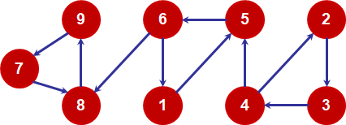3个强连通分量的有向图
首先将 2，3，4 定义为C1 ； 1，5，6 定义为C2 ；7，8，9定义为C3
你会发现，如果你一开始选取的结点是C1或C2中的结点，我们无法很好的将结点分为正确的强连通分量集合，比如从2出发，经过3到达4时，其实我们就已经找到一个强连通分量了（2，3，4），但是4还是会继续向5遍历，无法终止寻找或者说把前面几个数归结为同一个强连通分量再重新寻找新的强连通分量。然而如果我们一开始选取的结点是C3中的结点，便可以成功的找出强连通分量（7，8，9）。因此能否成功快速地找出强连通分量的关键在于选择合适的结点进行DFS遍历。
而进行两次DFS正是为了解决这个问题。下面给出正确性的证明。
定义： 一个强连通分量Ck，f (Ck) = max { f(vi) , vi∈Ck }
定理： （利用完成时间和SCC的性质自行证明或参考算法导论P358）
- 在图G化简后的有向无环图中，如果对结点u和v，有u∈Ci，v∈Cj，存在边<u,v>,则f (Ci) > f (Cj)
- 在图Grev化简后的有向无环图中，如果对结点u和v，有u∈Ci，v∈Cj，存在边<u,v>,则f (Ci) < f (Cj) （这里的完成时间是指在G中遍历得到的完成时间）
- 对两个强连通分量Ci和Cj，若有结点u和v，且u∈Ci，v∈Cj，存在边<u,v>，则一定不存在u‘∈Ci，v’∈Cj，使得边<v’,u’>存在。
根据上面两条定理，我们可以得知当我们按f(v)的降序，在Grev中运行Loop-DFS时，实际上我们便是从图中剩余结点中完成时间最大的强连通分量的一个结点出发进行遍历，根据定理2和定理3，我们可以保证我们可以得到跟前面例子中的C3一样的强连通分量，使得每次从选择的结点出发进行DFS遍历都能得到唯一且正确的强连通分量。
实例分析
还是以上图为例我们进行分析。这里给出的分析是先在Grev进行Loop-DFS，再在G进行Loop-DFS的过程，原理与上面的方法一致（提供另一个思路），上面方法的分析请自行尝试。
假定下图为原图反向后得到的Grev。
反向后的有向图
Loop-DFS 运行过程 （DFS遍历有多种情况，可能对完成时间有影响，但是对总的结果没有影响）
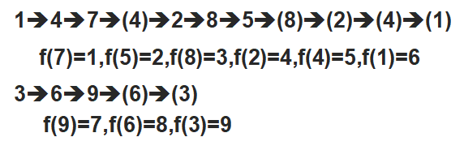反向图中完成时间分析
按照f值重新编号，并用原图分析。
有向图原图
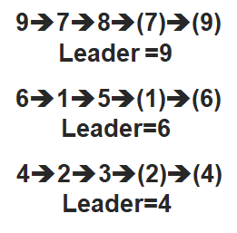强连通分量选取过程
可以看到我们正确的找出了图中的三个强连通分量。你应该也更好的理解了两次DFS的目的——找出正确的DFS调用起点。
复杂度分析
采用聚合分析的方法。
- 对图反向：O(m)
- 第一遍Loop-DFS：O(n+m)
- 第二遍Loop-DFS：O(n+m)
总的时间复杂度—— O(n+m)
- 本文链接：http://mlinku.top/2021/12/21/%E5%9B%BE%E7%9A%84%E6%90%9C%E7%B4%A2/
- 版权声明：本博客所有文章除特别声明外，均默认采用 许可协议。